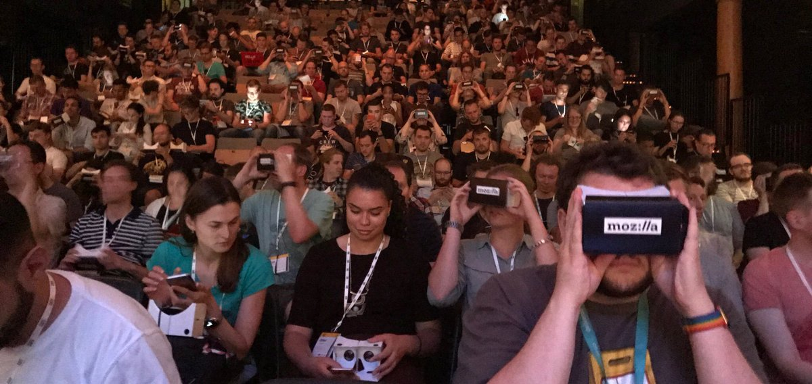
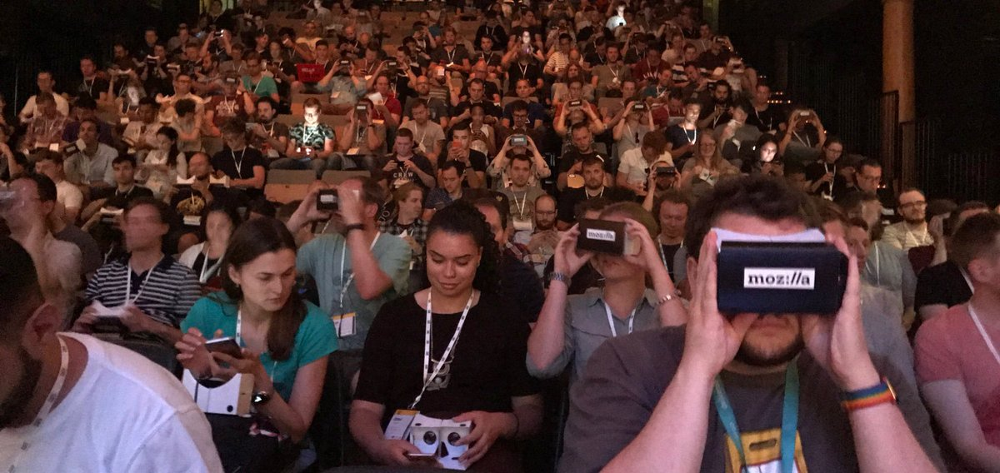
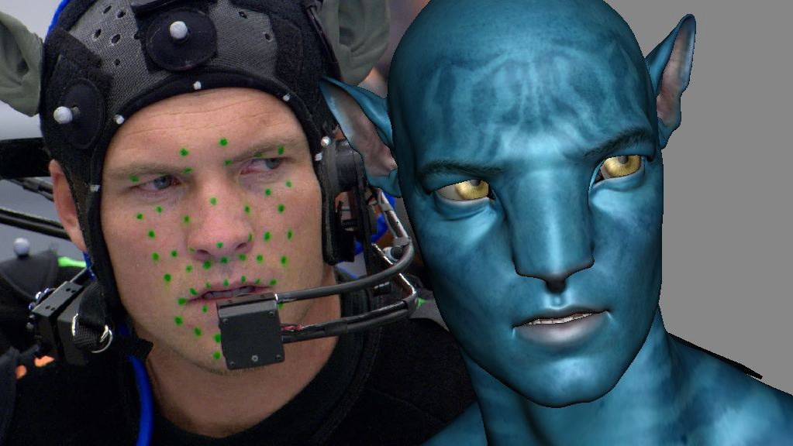

@samsunginternet
@lady_ada_king
The nuts and bolts of social VR
https://fast-sync.glitch.me
Tested up to 170 people...
 

Goals of Social VR
- Represent user's state for other users
- Enable communication
- Vocal
- Body Language
- Personal Space
- Self expression
What can the browser do to enable these better?
How does this work in the web?
Realtime Networking:
üëçüëçüëç
User tracking: üëç
Binding to Avatar: üòê
- Real time streaming tech, WebSockets and WebRTC
- Mocap from VR equipment
- Skinned 3D models
- Attaching data to a skeleton